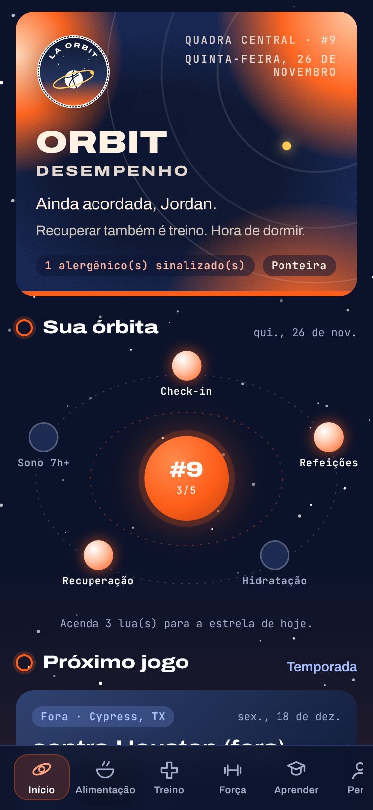
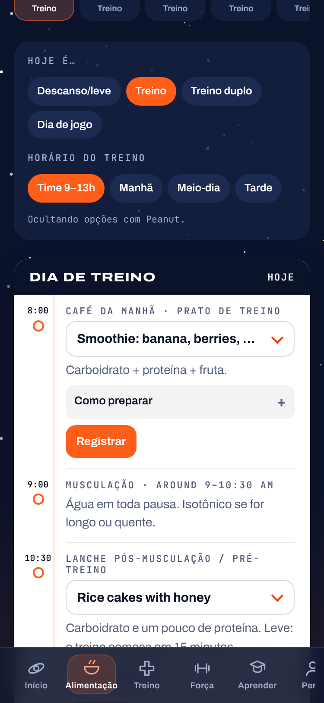

Abra npadu22.github.io/LOVB-LA. Sem App Store, sem conta, sem senha.

Toque em uma lua no Início para registrar. Acenda 3 ou mais para a estrela da noite; sete estrelas completam a constelação da semana.
Toda manhã, 15 segundos: sono, dor muscular, energia, humor, estresse e o que ajudou na recuperação de ontem.
Registre pelo menos uma refeição. Pelo plano alimentar é um toque: Registrar.
Defina o tamanho da garrafa uma vez e toque em +1 garrafa a cada uma que terminar. A lua acende na sua meta diária.
Toque no que você fez: sono, cochilo, refeição de recuperação, gelo, banheira de gelo, alongamento, atendimento e mais.
Toque depois de dormir 7 horas ou mais.
Doze pins em Perfil, do Kill por recorde na musculação ao Pancake por 8+ horas de sono. Toda segunda, o Início mostra a Semana passada.

Programas do time, programas da sua posição e qualquer programa que a Emma postar só para você.
Toque em Dia 1, Dia 2… no topo do programa. Os exercícios ficam em Pré-treino, Treino e Pós-treino.
Toque em Marcar como feito em cada exercício. Ver demonstração abre o vídeo quando a Emma adicionar. Seu código aparece em Seus programas.
Da Emma mostra os avisos mais recentes. Confira antes do treino e das viagens.
Abra a aba Força e toque em Força 1–4 ou Condicionamento. Caíque Bothelo define os exercícios da sua posição; Ver demonstração mostra o movimento.
Informe peso × repetições e toque em Registrar série. Aparece o que você levantou da última vez. Toque em Concluir no fim; o condicionamento pede o esforço (PSE 1–10) e a duração.
Sua evolução mostra o gráfico de cada exercício na temporada, com melhor peso, 1RM estimado e % de mudança. Bateu seu melhor? Aparece o selo de recorde.
Início › Mais › Hidratação. Escolha o tamanho da garrafa (16–40 oz) e uma meta diária. Ponto de partida: cerca de 80 oz, mais em dias quentes, longos ou com dois treinos.
Registre o que você fez hoje ou ontem. Depois de cerca de uma semana de registros e check-ins, O que funciona para você mostra os hábitos que vêm antes das suas melhores manhãs.
Início › Mais › Ciclo. Registre fluxo e sintomas; o app mostra o dia do ciclo e estima a próxima menstruação. Privado: fica no seu celular e pode ser apagado quando quiser.
Aprender › Pergunte à RD: digite qualquer dúvida e veja respostas revisadas pela sua nutricionista, cada uma com a fonte. Não achou? Um toque envia para ela. A Biblioteca tem aulas curtas; Ferramentas tem seus pratos e a checagem de suplemento (só certificações recomendadas pela USADA).
Em Perfil ficam seu cartão (com estilo alimentar), a coleção de pins, temas de cores, fundos, o tema de dia de jogo, texto maior, o idioma e o que é compartilhado com a comissão. Refeições com ★ foram escolhidas pela sua nutricionista.
Check-ins, refeições, água, musculação e condicionamento vão automaticamente para uma planilha privada que só sua nutricionista, fisioterapeuta e preparador físico podem abrir. Ciclo, notas, fotos e alergias ficam no seu celular.
Dor, inchaço, pancada na cabeça ou qualquer preocupação: procure a Emma no mesmo dia. Sem menstruação há 3+ meses, cansaço constante ou dúvida sobre suplemento: fale com sua nutricionista.
Instale · cadastre-se · primeiro check-in (ganha o First Touch) · registre uma refeição · abra Treino
Algo quebrado ou faltando? Início › Mais › Feedback do app envia uma nota para sua nutricionista.
Obs.: aulas, receitas, guias de cidades e avisos da comissão continuam em inglês por enquanto.